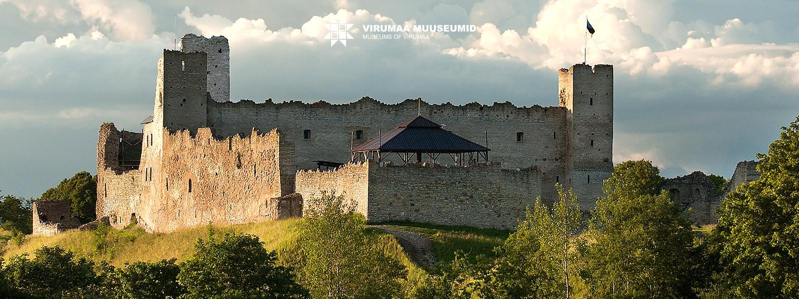
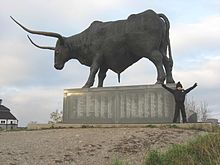
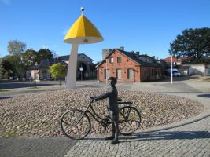

Teatrilinn Rakvere
Vanimad jäljed Rakvere linna asustusest on pärit praeguselt Teatrimäelt, kus vanim inimtekkeline kultuurkiht on dateeritud 3. - 5. sajandisse. Ilmselt selle asula kaitseks rajati Vallimäele, praeguse kivilinnuse kohale puitlinnus. Selle, kahekordse palktaraga linnuse vanim seniteadaolev dateering kuulub 5. - 6.sajandisse. Linnus Vallimäel oli üks suuremaid muinaseesti linnuseid ning seda tunti Tarvanpea nime all.
Linnapea Jakob Liivi (1919-1921) algatusel hakati ehitama teatrit mõisahoone külge, milles tegutses rahvamaja. Ehitus jäi mitmeks aastaks seisma, kuid sai uue hoo sisse 30-ndate aastate lõpus ning teater avati pidulikult 24. veebruaril 1940. Teatri arengut ei pidurdanud ka hilisem sõda ja võõrvõimude vahetumine – esimene kutseline peanäitejuht võeti tööle veidi aega pärast esimese nõukogude okupatsiooni algust 1940, täies koosseisus professionaalse näitetrupiga teatriks sai Rakvere teater aga 1942. aastal, juba Saksa ajal – ning on siiani järjepidevalt tegutsenud.
Rakvere kerkis rohkem tähelepanu keskmesse 1987. aasta kevadel seoses fosforiidisõjaga, mille käigus levis üle kogu Eesti protestilaine Rakvere külje all oleva fosforiidimaardla keskkonnaohtliku kasutuselevõtu vastu.
Kui oled vaadanud linna keskväljakut, siis liigu edasi Vallimäele
Vaata wikipediast Rakvere ajalugu
|  |  |  |
Rakvere kõige tähtsam vaatamisväärsus on ordulinnuse varemed Rakvere Vallimäel. Vallimäel asuvad ka skulptuur Tarvas, Vallimäe Laululava ja Vallimäe tuulik ning kõrgendiku lõunaosas paikneb Rakvere tammik.
Külastage Rakvere teatrit ja puhake Aqva Hotel&Spa's